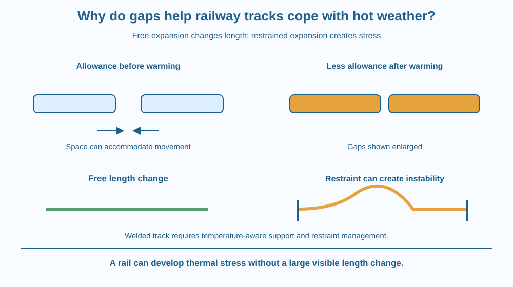

Explain why warming a metal rail can change its length and why restraining that change creates forces. Distinguish thermal expansion, expansion allowance and buckling. Recognise that jointed rails and continuously welded rails manage the same material behaviour in different ways.
A rail looks rigid enough to keep exactly the same length. Yet engineers consider its temperature when designing and maintaining a track. A long strip of steel can need room or restraint management as weather changes.
Older jointed tracks may have spaces at joints. Many modern tracks use long continuously welded rails instead. Does the second design mean thermal expansion stopped existing? No. The engineering arrangement changed, but the steel's response to temperature did not disappear.
The useful question is what happens when a material wants to expand and its surroundings do or do not allow that movement.
Thermal expansion is a change in dimensions associated with a temperature change. Most ordinary metal rails become longer when warmed under conditions where they can expand freely. Cooling reverses the direction of that dimensional tendency.
At the microscopic level, thermal motion interacts with the non-symmetric shape of the forces between neighbouring atoms. As temperature rises, their average separation can increase. Saying merely that atoms “get bigger” is misleading: the change mainly concerns average spacing in the solid.
For a limited temperature range, a simple model relates free length change to the original length and temperature change. A longer piece of the same material tends to show a larger total change than a shorter piece for the same temperature rise.
A gap at a joint can provide expansion allowance. As adjoining rails warm and lengthen, some of the available space can close. The design must also allow for cooling and for the mechanical requirements of a safe running surface.
If a rail is restrained from expanding freely, its thermal tendency produces stress within the rail and forces on the restraint system. A rail can therefore be under substantial thermal stress even if its visible length changes very little.
Buckling is a change in shape when a compressed structure becomes unstable. In a track, the rail's resistance to sideways movement depends on the wider support system, including sleepers, fastenings and ballast or other track construction. Track safety cannot be reduced to the existence of one gap.
Continuously welded rail is installed and managed using engineering controls that account for temperature and restraint. It is not simply a jointed railway with all gaps carelessly removed. Its design requires attention to the temperature at which the rail is effectively stress-free and to the strength of the support arrangement.
Rail temperature can differ from air temperature because sunlight and other heat exchanges affect the rail. A weather report alone is not a direct measurement of the metal. This lesson therefore avoids inventing a single gap size that would be correct for every track in India.
Place a strip on a drawing with two alternatives. In the first, one end can move into a small free space. In the second, both ends are restrained. Mark the same warming tendency on each.
The first drawing shows movement consuming allowance. The second shows increasing internal stress and possible shape change if the system loses stability. Neither drawing should suggest that restraint removes the material's thermal behaviour.
A paper strip can model the visible difference between free movement and restrained bending, but pressing paper by hand is not thermal expansion. Keep the cause in the real rail separate from the force applied in the classroom analogy.
The SVG shows two rail ends separated by an allowance space. A second state shows that space reduced after warming. Arrows indicate the free expansion directions toward the gap.
A lower comparison shows a restrained straight strip and a sideways buckle as a possible instability. Its caption explains that actual track resistance comes from a complete engineered support system. The diagram does not claim that every restrained rail buckles.
The drawing uses enlarged gaps to make the change visible. It is not a specification for a real joint, a track inspection guide or a scale drawing of permissible rail movement.

Indian railway networks include different track constructions. A photograph of one joint is not enough to infer the design of an entire route. Thermal behaviour must be considered alongside loading, alignment, maintenance and the supporting ground.
Bridges and long pipelines also need ways to accommodate or manage temperature-related movement. Some use joints or sliding supports; others rely on controlled restraint. The appropriate solution depends on the structure.
Students should observe railway engineering through safe photographs or official educational material. Never approach or enter tracks to inspect a gap. The lesson explains a design principle, not a practical activity beside a working railway.
Use a paper strip and two books on a table. No heating or metal tools are needed.
State the model's limit: your hands apply the force, whereas a rail's thermal stress arises from restrained expansion. The paper does not measure steel's expansion or reproduce a railway's support system. Stop before anything slips from the table.
Two metal strips are heated by the same temperature change. One is free to move and the other is held at both ends. Why might the free strip change length more while the restrained strip develops more stress?
Now compare a short strip with a long strip of the same material. Explain why even a small proportional expansion can matter over a long distance without inventing a numerical value for a real rail.
What is thermal expansion?
Answer: B — Thermal expansion describes how dimensions respond to temperature.
Why can an expansion allowance be useful at a joint?
Answer: C — Available space can accommodate some temperature-related length change.
A warming rail cannot expand freely. What can develop?
Answer: A — Restraint converts the tendency to expand into stress and forces in the support system.
Create a two-panel engineering explanation: “Allow movement” and “Manage restraint.” Put a jointed example in the first and a continuously supported restrained example in the second.
Explain how both account for the same expansion tendency. Include one warning against the claim that continuously welded rail needs no temperature management. Your explanation should identify a design decision rather than recommend a particular joint size or a method of altering actual track.
A material can try to change its dimensions without visibly doing so. The prevented change appears as internal stress instead. This makes engineering more subtle than measuring length alone: a structure that looks unchanged can still be responding strongly to temperature.
Warming tends to lengthen rails; engineering must provide movement allowance or safely manage the stress created when that expansion is restrained.